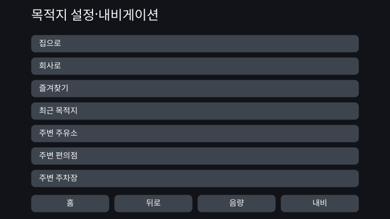
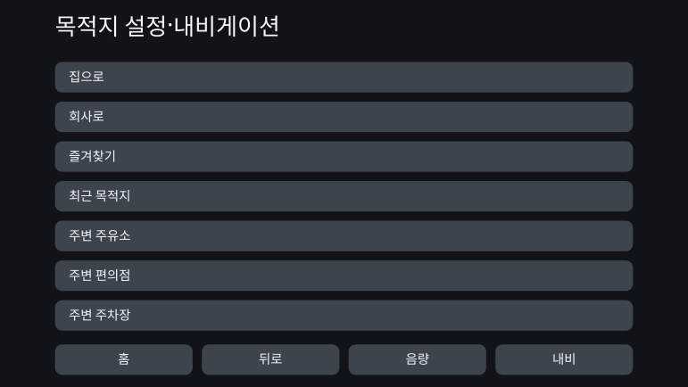
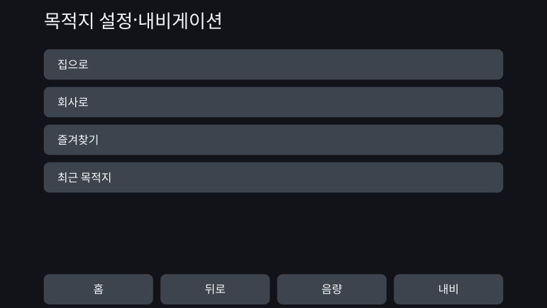

Personal Fit UI - 제약 기반 디자인을 통한 UI의 개인별 최적화
2026년 8월
개요
하나의 UI를 모두가 똑같이 사용한다. 그 대량생산의 전제에서 벗어나, 한 사람 한 사람의 인지·감각·신체 특성에 맞추어 UI를 생성할 수 없을지 검토했다.
목표로 삼은 것은 사용 중의 상황에 따라 화면이 끊임없이 변하는 UI가 아니다. 사용을 시작하는 단계에서 그 사람의 특성을 파악하고, 안전성과 접근성에 관한 제약을 지키면서 그 사람에게 맞는 UI를 미리 생성하는 구조다.
이 검토에서는 내가 “제약 기반 디자인”이라고 부르는 사고방식을 실천했다. 인간이 문헌과 규격을 근거로 지켜야 할 방향과 경계를 설계한다. 그 안에서 AI가 구체적인 값과 표현을 정하고, 생성물이 틀을 위반하지 않았는지를 검증한다.
PoC에서는 자동차 내비게이션을 소재로, 특성이 서로 다른 13명의 페르소나에게 UI를 생성했다. 그 결과, 눈에 띄는 외형의 변화는 거의 생기지 않았다. 한편으로 제약을 검증 가능한 형태로 적어 내려가는 과정에서, 개인별 최적화의 여지가 어디에 남아 있고 어디에서는 제약에 의해 사라지는지가 드러났다.
하나의 UI를 모두에게 건넨다는 것
현재 많은 제품은 대량생산을 전제로 설계되어 있다. 하나의 UI로 가능한 한 많은 사람을 포괄한다. 글자 크기나 표시 항목 수를 변경할 수 있는 제품이라 해도, 자신에게 맞는 상태는 사용자 스스로 찾아 설정해야 한다.
이 방식은 많은 사람에게 작동한다. 그러나 “많은 사람에게 맞는다”와 “모두에게 맞는다”는 같지 않다. 공통의 설계 기준을 충족하는 제품이라도, 그 UI를 쓰기 어려운 사람은 남는다.
차량용 UI의 평가에도 이 구조가 나타난다. 미국 NHTSA의 운전 중 시선에 관한 수용 절차는 모든 피험자가 기준을 충족할 것을 요구하지 않는다. 합격 판정은 피험자 24명 중 21명이 기준을 충족하는 것을 조건으로 하며, 일정 수가 기준을 충족하지 못하는 상황을 제도 안에 미리 반영해 두고 있다. 나아가 자동차 제조사가 규제 당국에 제출한 자료에서는, 여러 과제에 걸쳐 일관되게 오래 시선을 떼는 사람이 약 6명 중 1명 있다고 보고되어 있다. 다만 이 자료는 규제 대상인 제조사가 기준의 완화를 요구하며 제출한 것이다. 본 제안이 목표로 하는 바는 기준의 완화가 아니라, 개인화를 통해 기준을 충족할 수 있는 사람을 늘리는 것이다.
개인별로 최적화된 UI의 의의는 모두의 화면을 새롭게 보이게 하는 데 있지 않다. 획일적인 UI에서 놓치고 있던 사람을, 쓸 수 있는 범위와 안전하게 조작할 수 있는 범위 안으로 들여놓는 데 있다.
지금까지는 한 사람을 위해 하나의 UI를 설계하는 비용이 현실적이지 않았다. AI를 설계 공정의 일부로 다룰 수 있게 되면서, 이 전제가 바뀌기 시작하고 있다.
소재로서의 자동차 내비게이션
이 작업의 주제는 자동차 내비게이션이 아니라 개인별로 최적화된 UI다. 자동차 내비게이션은 그 가능성과 한계를 검증하기 위한 하나의 사례로 골랐다.
차량용 UI는 제한된 화면, 짧은 응시 시간, 조작의 안전성과 같은 강한 제약을 지닌다. 출하 전에는 많은 사람이 이용할 수 있는 획일적인 UI로 검증되지만, 그 설계가 맞지 않는 사람에게도 같은 UI가 제공된다.
제약이 엄격한 이 영역에서 개인별 최적화가 성립한다면, 제약 기반 디자인의 사고방식을 구체적으로 검증할 수 있다. 반대로 제약 때문에 AI의 자유도가 거의 남지 않을 가능성도 있다. 그 양쪽을 모두 관찰할 수 있는 소재였다.
일본에서는 2026년 현재, OTA 업데이트에 대응하는 차종과 업데이트에 대응하지 않는 기존형 공장 장착 내비게이션이 함께 존재한다. 또한 지도 데이터를 갱신할 수 있다 해도, UI의 기본 구조가 구입 이후 지속적으로 재설계된다고는 할 수 없다. 본 PoC에서는 사용을 시작한 뒤 UI가 자주 갱신되지 않는 시스템을 상정했다.
개인별 최적화를, 생성 가능한 구조로 만든다
제약 기반 디자인이란 틀을 명확히 정한 뒤, 그 안에서 AI가 뉘앙스를 포착하며 유연하게 움직일 수 있도록 하는 설계다. 정해진 표에서 값을 꺼내 오는 파라메트릭한 구조와 달리, AI가 탐색할 수 있는 해의 범위 그 자체를 설계한다.
과학적 지견이 언제나 구체적인 수치까지 제시해 주지는 않는다. “크게 한다”, “정보를 줄인다”와 같은 방향만 주어지는 경우도 있다. 값까지 정해지는 부분은 규칙으로 계산하고, 방향만 알려진 부분에서는 제약이 허용하는 범위 안에서 AI가 구체를 정한다. 그 구분을 모호하게 두지 않는 것도 구조의 일부로 삼았다.
인지 차원의 확정
진단명이 아니라, UI의 사용성과 관계있는 특성을 축으로 정의한다. 작업기억, 방해 자극에 대한 내성, 시각·청각 특성, 손가락의 정교함 등.
매핑 표
사용자의 특성을 움직여야 할 UI 파라미터에 연결한다. 어떤 특성이 무엇을 어느 방향으로 움직이는지를 근거와 함께 제시한다.
과학적 지견·규격
안전 기준, 접근성 규격, 인지과학의 지견, 일반적인 UI 설계 원칙을 수집한다.
제약 조건군
생성물이 반드시 지키는 조건. 이념에 머무르지 않고 “충족했는가, 위반했는가”를 검증할 수 있는 형태로 기술한다.
디자인 공간
글자 크기, 터치 목표, 표시 항목 수, 정보 위계, 알림, 어휘, 순서, 그룹화 등 UI가 취할 수 있는 선택지. 매핑 표가 조정의 방향을 주고, 제약 조건군이 허용되지 않는 해를 걸러 낸다.
틀 안에서 AI가 구체화한다
남겨진 자유도 안에서 값·어휘·순서·군집화를 정한다. 별도의 검사로 틀에 대한 적합을 확인하고, 조건을 충족한 개인별 최적화 UI만을 출력한다.
PoC: 13명의 페르소나에게 UI를 생성한다
PoC에서는 특성의 조합이 서로 다른 13명의 페르소나를 준비했다. 이들은 실재하는 사용자 분포를 재현한 것이 아니라, 어떤 특성에 의해 UI가 변화하는지를 확인하기 위해 특성을 의도적으로 배치한 검증용 격자점이다.
각 페르소나에 대해 공통의 획일적인 UI를 before, 그 사람의 특성을 입력해 생성한 UI를 after로 삼아 비교했다.
거의 변화하지 않은 예
PS-01 — 기준 (중년·전형)
이 페르소나는 인지·감각·신체 특성이 모두 전형적인 범위에 있다. 개인별 최적화 후에는 글자가 아주 조금 커졌을 뿐, 표시되는 항목 수와 배치, 터치 영역의 크기는 거의 달라지지 않았다.
획일 UI (before)

개인별 최적화 UI (after)

시각적인 변화가 나타난 예
PS-12 — 중년·정교함이 낮음 (감각·인지는 전형)
이 페르소나는 연령, 감각 특성, 인지 특성이 PS-01과 같고 손가락의 정교함만 낮다. after에서는 터치 목표가 커지고, 한 화면에 표시되는 항목이 7개에서 4개로 줄었다. 나머지 항목은 다음 화면으로 넘어가, 하나하나의 조작 대상을 크게 확보하고 있다.
획일 UI (before)

개인별 최적화 UI (after)

문헌은 터치 목표가 충족해야 할 하한이나, 조작 정밀도가 낮은 경우에 크게 해야 할 방향을 제시한다. 그러나 “이 사람에게는 얼마나 더 얹을 것인가”까지 하나로 정해 주지는 않는다. 그 미확정 부분을 AI가 제약의 범위 안에서 구체화했다.
PoC의 결과
시각적으로 명확한 변화를 확인할 수 있었던 것은 13명 중 PS-12뿐이었다. 많은 페르소나에서는 before의 획일적인 UI가 이미 충분히 기능하고 있었다. 개인별 최적화에 의한 이점은, 적어도 화면의 외형으로 인식할 수 있는 형태로는 거의 나타나지 않았다.
PS-12에서는 개인화를 시각적으로 보일 수 있었지만, 이 정도의 변경이라면 기존 제품의 표시 설정이나 접근성 설정으로도 실현할 수 있다. 사용자가 스스로 설정하지 않아도 처음부터 맞는 상태를 제공할 수 있다는 점에는 의미가 있다. 그러나 AI가 아니면 제시할 수 없는 새로운 UI를 만들어 냈다고는 말할 수 없다.
이 결과를 두고 “AI에 의한 개인별 최적화가 성공했다”고 결론짓지는 않았다.
왜 차이가 생기지 않았는가
원인은 제약을 충족하는 디자인 공간이 좁았다는 데 있다.
차량용 UI에는 안전상의 하한과 상한이 수없이 존재한다. 글자와 터치 목표는 일정 이상의 크기를 필요로 하고, 한 화면에 표시할 수 있는 정보량에는 상한이 있다. 이들을 차례로 적용하자 AI가 고를 수 있는 해는 얼마 남지 않았다.
AI가 구체화한 항목의 다수도 이번 규모에서는, 인간이 한 번 정해 두면 작은 대응표로 고정할 수 있는 범위였다. 이는 “AI가 불필요했다”는 의미가 아니다. 문헌이 제시하지 않은 구체적인 값을 메우는 역할은 담당하고 있었다. 다만 AI가 탐색하기에는 남겨진 선택지가 너무 적었다.
한편 어휘의 바꿔 쓰기에는 넓은 자유도가 남았다. 그러나 그 차이는 화면 구성의 변화로는 잘 드러나지 않았고, 인간이 가치를 인식할 수 있었던 영역과 규칙으로는 다 쓸 수 없는 영역이 겹치지 않았다.
UI보다 틀의 설계에서 성과가 나타났다
이 PoC에서 가장 큰 성과가 생긴 곳은 UI를 생성하는 단계보다, 그 앞에서 제약을 설계하는 단계였다. 규격과 문헌을 기계가 검증할 수 있는 조건으로 적어 내려가는 과정에서, 틀 자체에 여러 불일치가 발견되었다.
- 같은 UI 요소에 대해 서로 다른 규격이 각기 다른 하한을 주고 있었다.
- “주행 중에만 적용한다”는 조건을 사양에 기술할 자리가 없었다.
- 본래 독립적인 두 개의 설계 축을 하나로 묶은 탓에, 대부분의 선택지가 제약에 의해 배제되어 있었다.
- 어떤 제약이 어떤 출력을 지배하는지를 AI에게 충분히 전달하지 않아, 관계없는 조건이 판단에 쓰이고 있었다.
- AI에게 남겨야 할 판단을 구현 쪽에서 고정해, 제약 기반 디자인을 단순한 규칙 엔진에 가깝게 만들고 있었다.
각각에 대해 AI가 불일치를 검출해 해당 부분을 제시하고, 인간이 판단해 제약을 수정했다.
즉 이번 성과는 “AI가 새로운 UI를 만들었다”는 데보다, AI와의 왕복을 통해 UI를 낳는 틀 자체가 검증되고 갱신되었다는 데 있다. 제약 기반 디자인에서 AI의 역할은 완성물을 생성하는 것만이 아니다. 생성하기 전에 규칙끼리의 충돌이나, 의도치 않게 지워진 디자인의 가능성을 찾아내는 데에도 있다.
Future Work — 틀은 명확하게, 틀 안은 넓게
제약 기반 디자인에서 AI에게 기대하는 것은 정해진 값을 표에서 꺼내 오는 일이 아니다. 명백히 부적절한 생성물을 제약으로 걸러 낸 뒤, 남겨진 다수의 가능성 가운데 확률적으로 타당성이 높은 해를 제시하는 것. 혹은 인간이 사전에는 떠올리지 못했던 패턴을 보여 주는 것이다.
이번에는 그 효과가 충분히 나타나지 않았다. 충돌이 없었기 때문이 아니라, 제약을 충족하는 디자인 공간이 좁아 “더 적합한 해”나 “새로운 해”를 고를 의미가 거의 남지 않았기 때문이다.
다음에 물어야 할 것은 AI가 유효한가가 아니다. 어느 정도의 넓이를 가진 디자인 공간에서 AI다운 효과가 생겨나는가.
다음 실천에서는 안전성을 지키면서도 복수의 타당한 해가 남고, 규칙으로는 다 쓸 수 없는 차이를 인간도 가치로 인식할 수 있는 소재를 고른다. 틀은 명확하게 정한다. 그러나 그 안에는 AI가 탐색할 수 있는 넓이를 남긴다. 그 양립이 제약 기반 디자인을 단순한 자동화가 아니라 AI 시대의 디자인 방법으로 만든다.